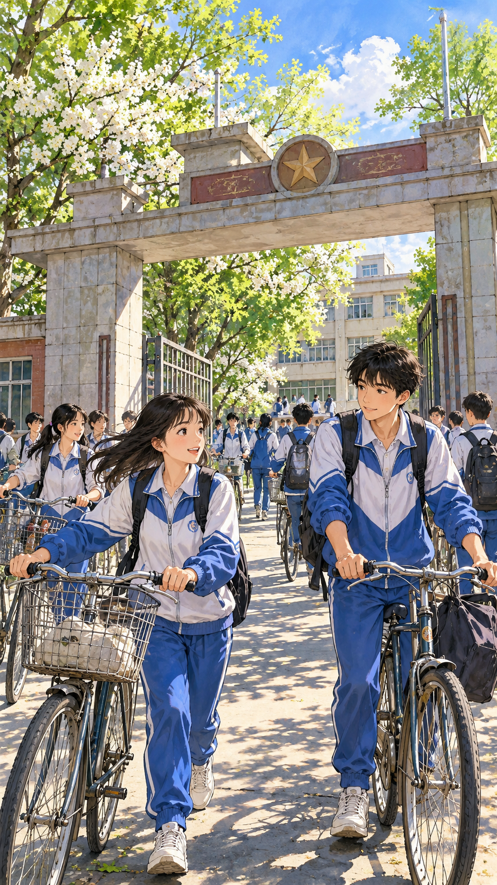
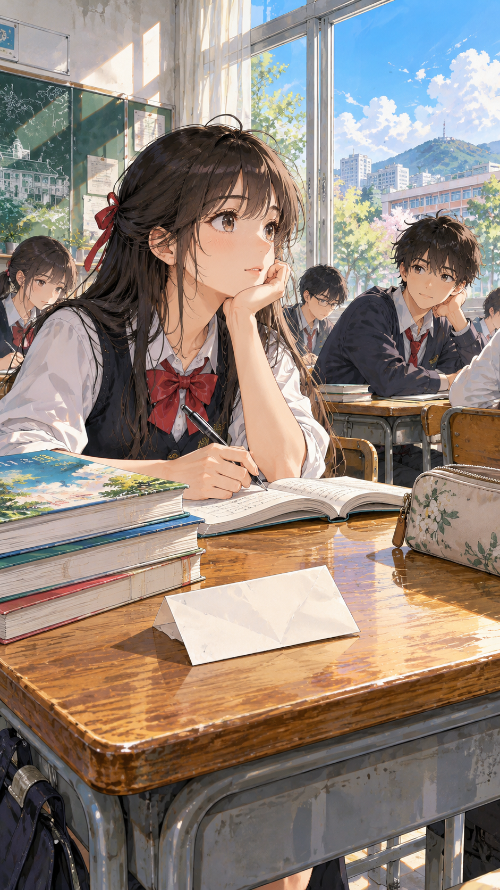
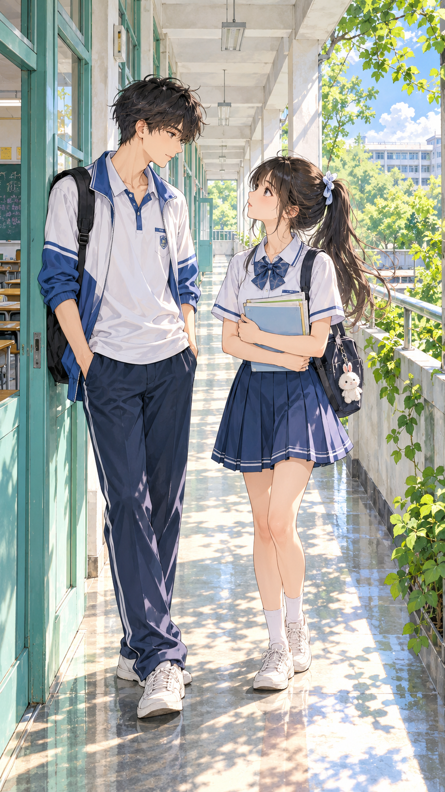
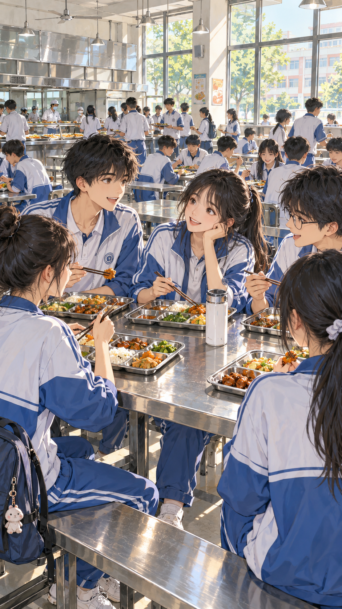
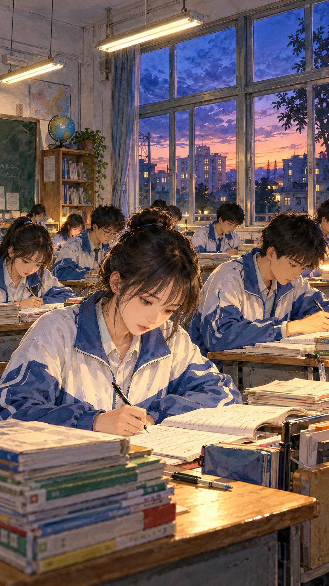

项目已有插画与重新提炼的复刻提示词，生成效果待验证。

2000年代普通中学，初夏，蓝白运动校服。手绘漫画背景质感，人物比例自然。保持人物发型、校服、建筑与参考图一致。镜头、主体动作、光线与配色按下方场景设定。手机竖屏构图，中下部留低细节区域。不含可辨认文字、品牌、水印、按钮或界面。 初夏的普通中学校门，蓝白校服学生推自行车进入校园。平视中远景，校门和树冠构成画框。柔和晨光、树叶绿与天空蓝，底部道路留旁白区域。

2000年代普通中学，初夏，蓝白运动校服。手绘漫画背景质感，人物比例自然。保持人物发型、校服、建筑与参考图一致。镜头、主体动作、光线与配色按下方场景设定。手机竖屏构图，中下部留低细节区域。不含可辨认文字、品牌、水印、按钮或界面。 从课桌斜上方看空白纸条、课本与笔，窗边同学在中景。午后侧光、木色与米白，纸条无文字，右下桌面留白。

2000年代普通中学，初夏，蓝白运动校服。手绘漫画背景质感，人物比例自然。保持人物发型、校服、建筑与参考图一致。镜头、主体动作、光线与配色按下方场景设定。手机竖屏构图，中下部留低细节区域。不含可辨认文字、品牌、水印、按钮或界面。 教学楼长走廊，两位同学在窗边交谈，蓝白校服。平视中景，柱廊形成纵深。左侧柔和日光，底部减少碎光与纹理。

2000年代普通中学，初夏，蓝白运动校服。手绘漫画背景质感，人物比例自然。保持人物发型、校服、建筑与参考图一致。镜头、主体动作、光线与配色按下方场景设定。手机竖屏构图，中下部留低细节区域。不含可辨认文字、品牌、水印、按钮或界面。 校园食堂的长桌旁，同学一起吃饭聊天。餐盘、水杯与窗户交代日常，中景平视。背景人群简化，暖光照到桌面，底部留连续色块。

2000年代普通中学，初夏，蓝白运动校服。手绘漫画背景质感，人物比例自然。保持人物发型、校服、建筑与参考图一致。镜头、主体动作、光线与配色按下方场景设定。手机竖屏构图，中下部留低细节区域。不含可辨认文字、品牌、水印、按钮或界面。 蓝紫暮色窗外与暖白室内灯光，两位同学看同一道题。中近景，课本与笔在桌面，统一校服和窗框。文字区避开灯管与反光。
humeng 小程序｜提示词与笔记
官网提示词 https://itlifetime.com/prompts